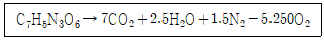
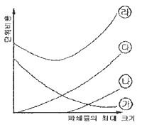
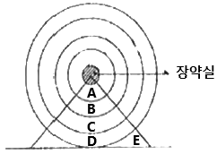
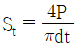
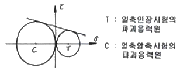
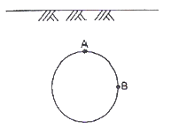
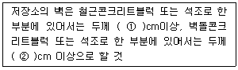

화약류관리산업기사 (2013-09-28 기출문제)
1과목: 일반화약학
1. 다음 중에서 자연발화 또는 자연폭발을 일으키는 경향이 가장 높은 것은?
- 면약
- 흑색화약
- 도화선
- 함수폭약
(정답률: 알수없음)

2. TNT(Trinitrotoluene)의 폭속에 가장 가까운 값은? (단, 비중은 1.60 이다)
- 3,700m/s
- 4,500m/s
- 5,200m/s
- 7,000m/s
(정답률: 알수없음)
3. 니트라민계 화합폭약에 해당하는 것은?
- RDX
- 피크린산
- TNT
- DNN
(정답률: 알수없음)
4. 젤라틴다이너마이트가 이론상 완전폭발하였을 때 발생 하는 Gas를 옳게 나타낸 것은?
- CO, H2S, H2
- CO2, H2S
- CH4, CO, CO2
- CO2, H2O, N2
(정답률: 알수없음)
5. 슬러리(Slurry)폭약의 조성과 무관한 것은?
- 질산암모늄
- 니트로글리콜
- TNT
- 물
(정답률: 알수없음)
6. 다음 중 발파시 갱내가스 폭발을 방지하기 위한 방법 으로 가장 옳은 것은?
- 폭발시 화염의 길이를 길게 한다.
- 폭발온도를 높여 준다.
- 폭약에 염화나트륨을 배합한다.
- 폭약에 KCIO3를 배합한다.
(정답률: 알수없음)
7. 공업 뇌관의 성능 시험법에 해당하는 것은?
- 둔성 폭약 시험
- 폭속시험
- 갱도시험
- 발화점시험
(정답률: 알수없음)
8. 도화선의 1m당 평균 연소초시로 가장 적합한 것은?
- 1~1.4초
- 10~14초
- 100~140초
- 1,000~1,400초
(정답률: 알수없음)
9. TNT는 각 니트로화 과정에서 각종 이성질체들이 많이 함유되어 있다. 고순도의 TNT를 얻기 위해 이들을제거하는데 사용되는 것은?
- Na2SO3
- NaCI
- KCI
- NaNO3
(정답률: 알수없음)
10. 화약의 위력(정정효과)시험으로 가장 관계가 없는 것은?
- 탄동구포시험
- 유발시험
- 연주시험
- 탄동진자시험
(정답률: 알수없음)
11. 뇌홍의 제조원료에 해당하는 것은?
- 목탄
- 수은
- 염소산칼륨
- 염소산칼슘
(정답률: 알수없음)
12. 산업용 뇌관의 첨장약으로 사용되지 않는 것은?
- 헥소겐
- 펜트리트
- 테트릴
- 티엔티
(정답률: 알수없음)
13. 폭속을 측정하는 시험법이 아닌 것은?
- 이온갭식
- 도트리쉬법
- 광화이바법
- 하이드법
(정답률: 알수없음)
14. 목분 1kg 이 연소하면 약 961L의 산소가 부족하여 산소공급제로 질산칼륨을 이용한다. 이 때 산소균형을 위한 질산칼륨의 이론적 양은 약 몇 Kg인가?
- 0.5
- 1.5
- 2.5
- 3.5
(정답률: 알수없음)
15. 다음 중 화약류의 폭발 생성 가스로 인체에 유독성이 가장 높은 것은?
- 일산화탄소
- 메탄가스
- 질소
- 이산화탄소
(정답률: 알수없음)
16. 다음 중 발사약에 사용되는 것은?
- 무연화약
- TNT
- 카알릿
- 테트릴
(정답률: 알수없음)
17. 다음 반응식을 이용해 TNT의 1g당 산소평형 값을 구하면 약 몇 g인가?

- -0.37
- -0.74
- -0.48
- -1.74
(정답률: 알수없음)
18. 비전기뇌관의 점화장치인 플라스틱 튜브 내벽에 도포 하는 화약으로 맞는 것은?
- HMX
- DDNP
- 흑색화약
- TNT
(정답률: 알수없음)
19. 뇌관의 위력을 측정하는 납판시험에서 사용하는 납판의 두께는?
- 2mm
- 3mm
- 4mm
- 5mm
(정답률: 알수없음)
20. 화약에서 산소 공급제로 주로 사용되는 것은?
- MnSO4
- NH4CI
- TNT
- KCIO3
(정답률: 알수없음)
2과목: 발파공학
21. 시험발파를 실시하여 얻은 지반진동속도 자료를 회귀 분석한 결과 중앙값에 대한 발파진동속도 추정식이 V=1500(D/W1/2)-1.65로 도출되었다. 이 식을 95%의 상부신뢰수준에 대한 식으로 변환한 것으로 옳은 것은? (단, 식의 표준오차 0.1, 95%신뢰도와 자유도에 해당 하는 t값은 1.96이다.)
- V = 1025.53(D/W1/2)-1.65
- V = 11⑤.47(D/W1/2)-1.65
- V = 2355.54(D/W1/2)-1.65
- V = 2625.53(D/W1/2)-1.65
(정답률: 알수없음)
22. 하우저(Hauser)의 발파식 L=CW3에서 발파계수 C에 대한 설명으로 옳지 않은 것은?
- 발파계수 C는 암석계수(g)의 값은 작다.
- 연암보다 경암이 암석계수(g)의 값은 작다.
- 폭약의 위력이 클수록 폭약계수(e)의 값은 작아진다.
- 밀폐상태가 불완전한 경우 전색계수(d)의 값은 1 보다 크다.
(정답률: 알수없음)
23. 발파효과에 영향을 미치는 발파관련 변수에는 여러 가지가 있다. 다음 중 조절이 어려운 변수는 어느 것인가?
- 지하수 상태
- 비장약량
- 단위 천공율
- 발파의 지연초시
(정답률: 알수없음)
24. 다음 중 조절발파법인 Line Drilling에 대한 설명으로 옳지 않은 것은?
- 굴착예정면을 따라 일렬의 공들을 좁게 연속적으로 천공하여 인위적인 파단면을 형성하는 공법이다.
- 파단 예정면에 천공한 공에는 장약을 하지 않는것이 특징이다.
- 천공간격을 밀접하게 하기 때문에 천공비용이 많이 들며, 균질하지 않은 암반에서는 비효율적인 방법이다.
- 예정 파단선상의 공들은 평행 천공이 이루어지므로 천공작업이 쉽고, 발파시 매끈한 파단면을 얻을수 있다.
(정답률: 알수없음)
25. 누드지수(n)가 1.5일 때 Brallion 식에 의한 누드지수함수f(n)은 얼마인가?
- 2.25
- 2.69
- 2.94
- 3.34
(정답률: 알수없음)
26. 다음 중 전색물의 조건으로 옳지 않은 것은?
- 발파공벽과 마찰이 커서 발파에 의한 발생 가스의 압력을 이겨낼 수 있는 것
- 탄성률이 작지 않아서 쉽게 변형되지 않는 것
- 재료의 구입과 운반이 쉽고 값이 저렴한 것
- 틈새를 쉽게 빨리 메울 수 있는 것
(정답률: 알수없음)
27. 다은 중 수중발파 작업시 유의해야 할 사항으로 옳지 않은 것은?
- 비장약량은 노천발파보다 더 큰 값을 적용한다.
- 폭약은 양호한 내수성과 충격에 민감한 폭약을 사용 하여야 한다.
- 수중이므로 진동 및 충격파의 발생 등 발파공해문제에 대한 대비를 철저히 하여야 한다.
- 2차 파쇄가 어렵고 발파비용이 높기 때문에 발파는 항상 만족스러운 대비를 철저히 하여야 한다.
(정답률: 알수없음)
28. 다음 그림은 발파의 경제성을 평가하기 위한 그래프로서 파쇄물의 최대 크기(입도0에 대한 천공 및 발파, 운반,소할비용 등을 표시하고 있다. 이 그림에서 ㉮곡선이 가리키는 것은 무엇인가?

- 천공 및 발파비용
- 운반비용
- 소할비용
- 총비용
(정답률: 알수없음)
29. 항만의 매립 등에 사용되는 대괴를 생산하는 발파방법의 설명으로 옳지 않은 것은?
- 비장약령(Specific charge)을 낮게 하여야 한다.
- 최소저항선을 천공간격보다 크게 하여야 한다.
- 제발발파보다 지발발파를 실시한다.
- 1회당 1열씩 기폭시킨다.
(정답률: 알수없음)
30. 다음의 터널 심빼기 방법 중 그 성격이 나머지 셋과 다른 것은?
- 스피랄 컷(Spifal Cut)
- 다이몬드 컷(Diamind Cut)
- 코로만트 컷(Coromant Cut)
- 슬롯 컷(Slot Cut)
(정답률: 알수없음)
31. 다음 그림은 균질한 경암 내부에 구상의 장약실을만들고, 폭발시켰을 때 암석내부의 파괴상황을 나타낸 것이다. 암석이 대괴로 파괴되는 부분은 어느 곳인가?

- A부분
- B부분
- C부분
- D부분
(정답률: 알수없음)
32. 직경이 127mm인 무장약공 2공을 천공하여 평행공 심빼기 발파를 실시하는 경우 가능한 심빼기공의 천 공장은 얼마인가? (단, 무장약공과 심빼기공의 천공장은 동일하고, 굴진율은 95%로 한다.)
- 2.49m
- 3.22m
- 4.52m
- 5.01m
(정답률: 알수없음)
33. 계단높이 10m의 계단식 발파에 있어 직경 75mm의 발파공을 경사 3:1(경사각 약70°)로 하향 천공하여 에멀젼 폭약으로 발파할 경우 최대 저항선(maximum burden) Bmax는? (단, 암석계수 C=0.3kg/m3, 공저장약밀도 1b=4kg/m)
- 2.42m
- 2.74m
- 3.02m
- 3.34m
(정답률: 알수없음)
34. 발파시 암석이 불규칙하게 튀어나가는 것을 비산이라 하는데 다음 중 비산의 원인으로 옳지 않은 것은?
- 단층,균열,연약면 등에 의한 암석의 강도 저항
- 천공오차에 의한 국부적인 장약공의 집중현상
- 다단식 발파기를 사용한 분할발파
- 과다한 장약량
(정답률: 알수없음)
35. 다음 중 발파소음의 감소대책으로 옳지 않은 것은?
- 완전한 전색이 이루어지도록 하여 공발을 방지한다.
- 기폭방법에서는 정기폭보다 역기폭을 실시한다.
- 벤치의 높이를 줄이거나 천공지름을 작게 하는 등의 방법을 통해 지발당 장약량을 감소시킨다.
- 주택가에서 비장약량을 줄이기 위해 붙이기 발파를 실시하고 발파부위에 덮개를 덮어 소리의 전파를 차단한다.
(정답률: 알수없음)
36. 다음 중 불발의 원인으로 옳지 않은 것은?
- 1.5A이상의 뇌관 전류
- 발파기 용량부족
- 폭약의 변질
- 결선법의 부적합
(정답률: 알수없음)
37. 지발발파에 의한 계단식 발파의 경우 계단높이(H)에 대한 저항선(B)의 비 H/B가 4보다 작은 경우 천공간격(S)은?
- S=(H+2B)/3
- S=(H+7B)/8
- S=2.0B
- S=1.4B
(정답률: 알수없음)
38. 전기뇌관 5개를 직렬 결선하고 다시 이것을 3열 병렬 결선하여 50m의 거리에서 발파할 때 소요전압은 얼마인가? (단, 소요전류 1.2A, 발파기의 내부저항 3.0Ω, 전기뇌관 1개의 저항 0.972Ω, 발파모선 1m당 저항 0.0209Ω)
- 15.94V
- 19.54V
- 24.16V
- 28.43V
(정답률: 알수없음)
39. 다음 중 비전기식 뇌관의 특징에 대한 설명으로 옳지 않은 것은?
- 미주전류, 정전기 등에 안전하다.
- 전용시험기를 이용하여 손쉽게 결선 누락의 여부를 확인 할 수 있다.
- 전기뇌관과 마찬가지로 뇌관 내부에는 연시장치를 가지고 있다.
- 결선작업이 단순, 용이하여 작업능률이 높다.
(정답률: 알수없음)
40. 발파에 의해 발생하는 탄성파 중 암석이나 토양속을 진행하는 물체파로, 파가 진행할 때 지반의 입자들이 파의 진행방향과 같은 방향으로 운동하는 탄성파는?
- P파(Primary Wsve)
- S파(Secondary Wsve)
- L파(Love Qave)
- R파(Rayleigh Wave)
(정답률: 알수없음)
3과목: 암석역학
41. 터널 굴착시 지보재로 사용되는 숏크리트(shotcrete)는 시공법에 따라 건식공법과 습식공법으로 분류할 수있다. 다음 중 습식공법과 비교하여 건식공법의 설명으로 틀린 것은?
- 비교적 장거리 압송이 가능하다.
- 재료만을 공급하면 되므로 운반시간 등 공급 작업의 제한이 적다.
- 노즐에서 물과 재료를 혼합하기 때문에 품질관리가 용이하다.
- 분진과 리바운드 량이 비교적 많이 발생한다.
(정답률: 알수없음)
42. 다음 중 암반의 시간 의존적인 특성으로 옳지 않은 것은?
- 크리프(creep)현상
- 응력완화(stress relaxation)
- 소성(plasticity)
- 피로(fatigue)현상
(정답률: 알수없음)
43. 평면응력상태에서 σx = 400kg/cm, σy = 1000kg/cm 일 때 y방향의 변형률 εy는 얼마인가? (단, 탄성계수는 2×106 kg/cm2이고, 포아송비는 0.3)
- 3.7×10-4
- 4.4×10-4
- 6.5×10-4
- 8.0×10-4
(정답률: 알수없음)
44. 암석파괴이론인 Griffith 파괴이론에 의하면 일축압축 강도는 인장강도의 몇배가 되는가?
- 4배
- 8배
- 10배
- 20배
(정답률: 알수없음)
45. 암석의 인장시험에 관한 설명으로 옳은 것은?
- 압열인장시험의 강도는

에 의해 계산된다.(St : 인장강도, P : 작용하중, d, t : 시료의 직경과 두께) - 굴곡시험 시 시험편의 내부에는 압축응력과 인장 응력이 동시에 발생한다.
- 인장강도의 크기는 직접인장강도>압열인장강도>굴곡강도의 경향을 보인다.
- 암석과 같은 연성재료에서 인장강도는 파괴에 가장 큰 영향을 미치는 요소이다.
(정답률: 알수없음)
46. Wickham 등(1972)에 의해 제안된 RSR 암반분류법 에서 사용되는 기본요소가 아닌 것은?
- 암질지수(RQD)
- 일반적인 지질
- 절리형태와 굴진방향
- 지하수와 절리상태
(정답률: 알수없음)
47. 스테레오넷(stereonet)을 이용하여 암반 내 불연속면의 분포 특성과 사면의 방향성을 고려한 사면 안정해석방법은?
- 한계평형법
- 블록해석법
- 평사투영법
- 유한요소법
(정답률: 알수없음)
48. 등방성 물체에 외력을 가했을 때 종방향의 변형률이 2.5×10-3이고 횡방향의 변형률이 6.5×10-4이었다. 레임정수(Lame's constant) 는 얼마인가? (단, 영율 E=3.0×105kg/cm2)
- 1.29×105kg/cm2
- 1.33105kg/cm2
- 4.80105kg/cm2
- 6.94105kg/cm2
(정답률: 알수없음)
49. RMR값이 75인 불교란(undisturbed)암반의 Hook-Brown 파괴조건상수 s는 얼마인가?
- 0.06
- 0.12
- 0.18
- 0.24
(정답률: 알수없음)
50. 다음 중 암반의 비탄성 거동에 대한 설명으로 옳지 않은 것은?
- 응력을 제거하였을 때 영구변형이 발생한다
- 일정하중 하에서 변형률이 변화한다
- 일정변형이 발생할 때, 응력의 크기가 변화한다
- 외력의 제거와 동시에 변형이 완전히 소실된다
(정답률: 알수없음)
51. 터널계측은 일상적인 시공관리를 위한 일상계측과지반조건에 따라 추가로 실시되는 정밀계측으로 분류된다. 다음 중 정밀계측에 해당하는 것은?
- 터널 내 관찰조사
- 내공변위측정
- 천단침하측정
- 라이닝 응력측정
(정답률: 알수없음)
52. 다음의 역학적 모형 중 탄성, 점성 및 소성적 요소를 모두 갖춘 물체는 어느 것인가?
- Bingham 물체
- St. Venant 물체
- Kelvin 물체
- Maxwell 물체
(정답률: 알수없음)
53. 다음 그림은 일축압축강도 및 일축인장강도를 모어(Mohr)의 응력원으로 표시한 것이다. 이 모어의 응력원에 의하여 구할 수 있는 것은?

- 삼축압축강도
- 휨강도
- 전단강도
- 암석의 포아송비
(정답률: 알수없음)
54. 평면 변형률(PLane Strain)해석에 관한 설명으로 옳지 않은 것은? (단, v는 포아송비이다.)
- 3차원해석을 보다 간단히 하기 위한 방법 중의 하나이다.
- 세 직교방향의 변형률 중에서 적어도 하나는 0인 것이 특징이다.
- 암반 내에 굴착한 긴 수평 터널의 해석에 적합한 방법이다.
- 구속된 방향이 Z방향이면 σz=v(σx-σy)이다.
(정답률: 알수없음)
55. 현지 암반에 대해 조사를 실시하여 RMR값으로 40을 얻었다. 이 암반의 변형계수를 추정하면 얼마인가?
- 3.42GPa
- 4.51GPa
- 5.62GPa
- 6.73GPa
(정답률: 알수없음)
56. 다음 중 암반의 초기응력 측정과 관련이 없는 시험법은?
- 응력보상법
- 응력해방법
- 수압파쇄법
- 공내재하법
(정답률: 알수없음)
57. 다음 중 절리면에 대한 직접전단시험으로부터 직접 얻을 수 있는 자료가 아닌 것은?
- 절리면의 전단강성
- 절리면의 접착강도
- 절리면의 마찰각
- 절리면의 압축강도
(정답률: 알수없음)
58. 다음 중 암석의 삼축압축시험에서 봉압의 증가에 따라 발생하게 되는 현상이 아닌 것은?
- 파괴강도의 증가
- 취성거동에서 연성거동으로 전이
- 변형률연화현상의 발생
- 전류강도의 증가
(정답률: 알수없음)
59. 암반사면에서 평면파괴가 일어날 수 있는 기하학적 조건으로 맞는 것은?
- 미끄러짐면과 사면의 주향이 거의 직교할 때
- 파괴면의 경사각이 사면의 경사각보다 작을 때
- 파괴면의 경사각이 그 파괴면의 마찰각보다 작을 때
- 주절리 방향이 존재하지 않는 불연속면이 무수히 많이 산재할 때
(정답률: 알수없음)
60. 다음은 암반에 원형공동이 굴착된 그림이다. 점A(천반)와 점B(측벽)의 응력상태에 대한 설명으로 옳은 것은? (단, 측압계수=0인 상태이다.)

- 점A : 접선방향의 인장, 점B : 접선방향의 압축
- 점A : 접선방향의 인장, 점B : 접선방향의 인장
- 점A : 접선방향의 압축, 점B : 접선방향의 인장
- 점A : 접선방향의 압축, 점B : 접선방향의 압축
(정답률: 알수없음)
4과목: 화약류 안전관리 관계 법규
61. 화약과 비슷한 추진적 폭발에 사용될 수 있는 것으로서 대통령령이 정하는 것에 해당하지 않는 것은?
- 과염소산염을 주로 한 화약
- 질산요소를 주로 한 화약
- 과산화바륨을 주로 한 화약
- 황산알루미늄을 주로 한 화약
(정답률: 알수없음)
62. 일시적인 토목공사를 하거나 그 밖의 일정한 기간의 공사를 하는 사람이 그 공사에 사용하기 위하여 화약류를 지정하고자 하는 때에 한하여 설치할 수 있는 화약류 저장소는?
- 1급저장소
- 2급저장소
- 3급저장소
- 화약류취급소
(정답률: 알수없음)
63. 화약류를 발파 또는 연소시키려는 사람이 화약류의 사용허가를 받아야 하는 관서는? (단, 예외사항은 제외)
- 주소지를 관할하는 지방경찰청장
- 사용지를 관할하는 지방경찰청장
- 주소지를 관할하는 경찰서장
- 사용지를 관할하는 경찰서장
(정답률: 알수없음)
64. 화약류 판매업자가 소지 또는 양수허가를 받지 아니한 사람에게 화약류를 양도하였을 경우 받는 행정처분은? (단, 2회 위반시)
- 1월 효력정지
- 3월 효력정지
- 6월 효력정지
- 면허취소
(정답률: 알수없음)
65. 2급 저장소의 화약류 최대저장량으로 옳은 것은?
- 폭약 : 20톤
- 도폭선 : 1000km
- 실탄 및 공포탄 : 2000만개
- 미진동 파쇄기 : 400만개
(정답률: 알수없음)
66. 다음은 지상 1급저장소의 위치. 구조 및 설비의 기준에 대한 사항이다. ( )안에 알맞은 내용은?

- ① 10, ② 15
- ① 15, ② 20
- ① 20, ② 20
- ① 20, ② 30
(정답률: 알수없음)
67. 위험구역 안에서 화약류를 운반하는 축전지차의 구조의 기준으로 옳지 않은 것은?
- 차바퀴에는 고무타이어를 사용할 것
- 축전지는 진동에 의한 연향을 받지 아니하는 것으로 하고, 사용전압은 50볼트 이하로 할 것
- 배기관에는 배기가스의 온도를 섭씨 60도 이하로 유지 할 수 있는 배기가스냉각장치를 설치할 것
- 적재함 또는 짐받이 아래 면과 차축과의 사이에는 적당한 완충장치를 할 것
(정답률: 알수없음)
68. 다음 중 화공품에 해당하지 않는 것은?
- 신호염관
- 실탄 및 공포탄
- 시동약(始動藥)
- 뇌홍 등의 기폭제
(정답률: 알수없음)
69. 운반신고를 하지 아니하고 운반 할 수 있는 화약류의 종류 및 수량으로 옳은 것은?
- 미진동파쇄기
- 도폭선 2000m
- 폭발천공기 700개
- 장남감용 꽃불류 600kg
(정답률: 알수없음)
70. 화약류저장소의 위치·구조 및 설비를 허가 없이 임의로 변경하였을 경우의 벌칙은?
- 10년이하의 징역 또는 2천만원 이하의 벌금
- 5년이하의 징역 또는 1천만원 이하의 벌금형
- 3년이하의 징역 또는 700만원이하의 벌금형
- 2년이하의 징역 또는 500만원 이하의 벌금형
(정답률: 알수없음)
71. 다음 중 꽃불류 외의 화약류의 사용허가신청의 경우 허가 신청서에 첨부하여야 하는 서류는?
- 사용순서대장
- 사용장소 및 그 부근약도
- 사용책임자 및 작업자의 성명
- 사용계획서
(정답률: 알수없음)
72. 지하 1급저장소의 지반의 두께 기준 중 저장하는 폭약이 25톤 이하일 경우 지반의 두께는 얼마 이상이어야 하는가?
- 29m
- 28m
- 26m
- 24m
(정답률: 알수없음)
73. 전기발파의 기술상의 기준으로 옳지 않은 것은?
- 발파모선은 고무 등으로 절연된 전선 30m 이상의 것을 사용하되, 사용전에 그 선이 끊어졌는지의여부를 검사할 것
- 공기 장전기를 사용하여 폭약을 장전하는 때에는 전기뇌관을 반드시 천공된 구멍 입구에 두도록 할 것
- 동력선을 전원으로 사용할 때에는 전선에 0.5 암페어 정도의 적당한 전류가 흐르도록 할 것
- 도통시험 및 저항시험은 점화하기 전에 화약류를 장전한 장소로부터 30m 이상 떨어진 안전한 장소에서 할 것
(정답률: 알수없음)
74. 다음 중 화약류 제조업자의 결격사유의 기준으로 옳지 않은 것은?
- 금고 이상의 형의 선고를 받고 그 집행이 끝나거나 집행을 받지 아니하기로 확정된 후 3년이 지나지 아니한 사람
- 금고 이상의 형의 선고를 받고 그 집행유예의 기간이 끝난 날로부터 2년이 지나지 아니한 사람
- 20세 미만인 사람
- 파산선고를 받은 사람으로서 복권되지 아니한 사람
(정답률: 알수없음)
75. 다음 중 제3종 보안물건에 해당하지 않는 것은?
- 고압전선
- 고압가스충전소
- 석유저장시설
- 선박의 계류소
(정답률: 알수없음)
76. 화약류 폐기의 기술상의 기준으로 옳지 않은 것은?
- 얼어 굳어진 다이나마이트는 완전히 녹여서 연소처리 하거나 500g 이하의 적은 양으로 나누어 순차로 폭발처리할 것
- 화약 또는 폭약은 조금씩 폭발 또는 연소시킬 것
- 도화선은 연소처리하거나 물에 적셔서 분해처리할 것
- 도폭선은 적은 양으로 포장하여 땅속에 묻고 공업용 뇌관 또는 전기뇌관으로 폭발처리 할 것
(정답률: 알수없음)
77. 다음 중 화약류저장소에 화약류를 저장하는 경우의 저장방법 및 취급방법으로 옳지 않은 것은? (단, 수중저장소에서의 저장은 제외)
- 저장소의 경계울타리 안에는 폭발. 발화 또는 연소하기 쉬운 물건은 두지 아니할 것
- 저장소에 무연화약 또는 다이나마이트를 저장하는 경우에는 온도계를 비치할 것
- 화약류를 넣은 상자는 평행하게 쌓아 올리되 높이는 1.5m 이하로 할 것
- 저장소에 제조일로부터 1년 이상 경과한 화약류가 남아 있는 경우에는 그 이상유무에 특히 유의할 것
(정답률: 알수없음)
78. 화약류저장소에 설치하는 피뢰장치의 피뢰도선 및 가공지선의 전극 기준으로 옳지 않은 것은?
- 전극은 피뢰도선마다 1개 이상으로 할 것
- 전극을 땅에 묻을 때에 그 부근에 가스관이 있을 경우에는 그로부터 1미터 이상의 거리를 둘 것
- 전극은 구리판 또는 그 이상의 전도성이 있는 금속으로 할 것
- 전극의 접지저항은 피뢰도선이 2종 이상인 때에는 그 1줄마다 10Ω 이하로 할 것
(정답률: 알수없음)
79. 대발파의 기술상의 기준으로 옳지 않은 것은?
- 위해 예방에 필요한 주의사항을 보기 쉬운 곳에게시하여 작업자가 이에 따라 작업하도록 할 것
- 발파의 계획과 작업은 1급 또는 2급 화약류관리보안책임자로 하여금 직접하게 할 것
- 갱도의 굴진작업을 하는 때에는 그 작업에 필요한 최소량의 화약류만 기지고 들어갈 것
- 약포는 약실에 밀접하게 장전하고 습기가 차지 아니하도록 할 것
(정답률: 알수없음)
80. 질산에스텔 및 그 성분이 들어 있는 화약으로서 제조일로부터 366일 지났다면 안정도시험은 어떤 시험방법을 택해야 하는가?
- 유리산시험 또는 내열시험
- 유리산시험 또는 가열시험
- 내열시험 또는 가열시험
- 내열시험 또는 발화점시험
(정답률: 알수없음)